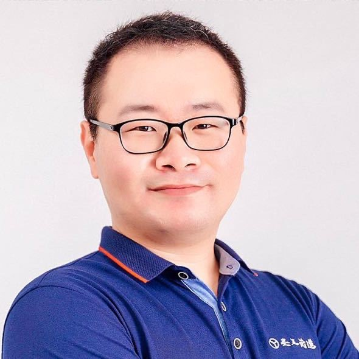

山川异域，风月同天。在世界的东方有这样一个岛国，那里生活着一个古老的民族，千百年来与我中华民族纠缠不休，互通文化，对我国犯下过滔天罪孽，也为我国培育过先驱巨匠。他们好战而祥和，黩武却好美，傲慢然尚礼，呆板又善变，驯服且倔强，忠贞也叛逆，勇敢兼懦弱，保守并喜新，矛盾如菊与刀。他们自称大和民族，称自己的国家为“日出之国”，这个国家就是日本。
兵无常势，水无常形。隋唐时期中华民族进入全盛，日本便频繁派来使者学习先进经验，史称遣隋使、遣唐使，他们带走了我们的文学、艺术、科技、制度，对日本的文化和发展产生了深远的影响。近代以来，满清积贫积弱，先进人士谋求变革，分东洋、西洋两路渡海求学，留学东洋的目的地便是日本。陈独秀、李大钊、鲁迅、周恩来、郭沫若 …… 从日本带回来先进的思想，先进的文化，现代汉语中如“政治”、“经济”、“哲学”等词汇便是那时由日本最先翻译传入中国的。这些率先觉醒的先驱引领着人民，逐步使我中国摆脱旧日的贫困，开启了中华民族伟大复兴的征程。而后数年，改革开放前夕，邓小平访问日本，学习了日本的发展成果之后，下定了变革求进的决心，才有如今的繁荣富强。
时至今日，攻守易形。和平年代下的美好，更促进了文化的交织。说到美国，你会想起好莱坞的电影；说到韩国，你会想起跌宕起伏的电视剧；说到日本，那必然是天马行空的动漫了。在日本这样一个漫画之国，图书电视的编排制作，街头巷尾的宣传告示，无不以漫画的形式讲述着大和民族的浪漫。日本的动画影响了一代中国九零后，日本的影视剧和音乐影响了一代中国八零后，这些影音资料又成为了新世代的中国人了解日本的窗口，又通过日本，了解我们自己，了解我们自己的祖先和文化，哪怕连我们自己都已经糟蹋舍弃的部分，日本人还在继承和发扬着，就像是我们自己的祖先在日本留下的一份中华文化的备份。现代日语中使用的大量的词汇和语法，竟与我们的古汉语完全一致，毕竟他们也念论语、读汉诗，传承佛教，习练书法 …… 若想要开启这座宝藏，感受天涯比邻的两个民族的文化，跨越千年在新时代相交的感动，掌握日语将是学者需要迈出的第一步！
唐山圣王教育集团起步于跆拳道教育培训，拥有独立品牌“圣王武道”，除了通过跆拳道运动带给学员们强健的体魄之外，更希望通过跆拳道给予学员们一个了解韩国传统的窗口，丰富学员的世界观。今特邀旅日归来的李毅老师，开设日语交流课程，面向社会招生。通过我们的课程，您可以获得：
圣王极简日语课采用 "小班授课" 形式，招收小学三年级以上学员，每节课安排 "1+半小时 限时免费 " 的课堂时间，具体内容如下：
一小时主讲授课：简单复习上节内容，推进本节课程内容。
半小时实战练习 限时免费：充分练习本节内容，兴趣内容交流答疑。
半小时加课限免福利，内测名额有限先到先得，正式招生后恢复原价。
李毅老师的课程紧凑而又实用，实战应用为先是其教学理念。李老师自幼喜爱文学，从作家名师郭松先生处问学多年，后考入唐山一中，高考语文单科成绩131分，充分体现了李老师学生时代的文学积累和应试素养。其后毕业于东北大学（教育部直属的国家“985工程”重点大学）软件工程专业，期间专业课授课答辩由外籍教师以全英文方式进行，后自学日语远赴日本从事软件开发工作。高中时始系统接触中国传统文化，大学时自学不辍，研究愈发精深，赴日工作期间，同时担任圣王武道的文化顾问，在道馆的文化设计方面多有良策。因感怀故乡，疫情肆虐，遂归国谋事，今得此良机，请其讲授日语课程，方有此事。李老师文理兼修，博学多才，文学上的修养使其常能旁征博引，信手拈来，理工科的逻辑又使其常能一针见血，深入浅出。李老师为人和乐坦易，因材施教，虽是日语课程，却常能以所讲授为手段，启发学员探索和掌握学习的一般规律，激发兴趣，自我驱动。
主讲讲师：李毅

教学理念：守护学习的热情
日语演变史、文字构成及发音规则教学。
平假名あかさたな行+输入法教学
平假名はまやらわ行+拨音ん教学
平假名清音复习
平假名浊音がざだば、半浊音ぱ
平假名拗音
平假名浊音、半浊音、拗音复习
片假名アカサタナ行+片假名的用途
片假名ハマヤラワ行+拨音ン教学
片假名清音部分复习
片假名浊音ガザダバ、半浊音パ、拗音
片假名浊音、半浊音、拗音复习
促音及长音发音规则、音调标记及MOJi辞書使用
考核①：假名练习正确率80%以上。
考核②：简单单词听发音默写假名。（由老师根据实际情况判定）
考核③：简单单词听发音按键输入成功。（可选使用电脑或手机）
考核④：简单单词读发音语音输入成功。（可选使用电脑或手机）
考核通过则可顺利进入第二部分的学习，考核失败原则上建议追加一节强化课。
采用《大家的日语（初级）》作为教材，每节课有成体系的主题内容，同时见缝插针地补充日语中不成体系的零碎用法。
因教学内容丰富，期间出现学习吃力的情况，原则上建议追加一节强化课。
根据学员需要强化的会话主题、兴趣形式另行定制专属课程方案。
比如学员喜欢观赏日本电视剧、动漫，则可以采用无字幕影片进行听说练习，如沉浸式配音、角色扮演等形式。
根据学员参加日语能力考试 (JLPT) 的目标等级另行拟定课程方案。
比如学员准备参加最近一次的N3考试，则可以按照考纲查缺补漏未学内容，练习往年真题和模拟测验进行答疑。